Case file 01 · B2B SaaS, retail operations · IIT Hyderabad capstone, now live
RetailPilot.
A stock alert, turned into a decision a store manager can defend, approve and check two weeks later. I designed it as my capstone at IIT Hyderabad. Then I built it and put it live.
- The problem
- One reorder took around 30 minutes across a spreadsheet, phone calls and the ERP. Most of that time went into deciding whether the alert was worth acting on at all.
- What I did
- I designed the decision rather than another dashboard: a ranked card, the evidence behind it, priced options and a purchase order ready to approve. Then I shipped it.
- The outcome
- 30→3min
per decision in walkthroughs with managers. The product is live as a pilot. - My role
- RoleDesigner and builderScopeResearch, UX, UI, brand, buildContextIIT Hyderabad capstoneTimeline3 months, then shippedTeamSoloStackNext.js, FastAPI, Postgres
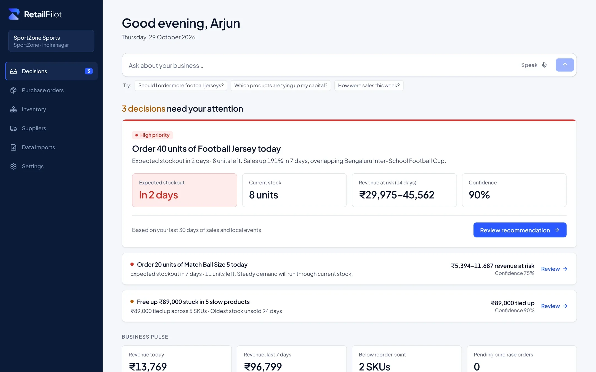
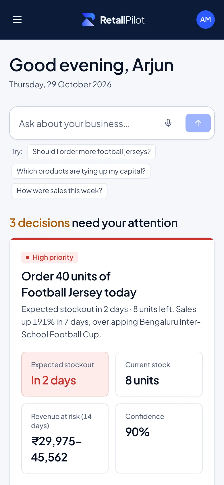
01 · The problem
The alert took two minutes. Everything after it took twenty-eight.
I shadowed the reorder process from start to finish. The inventory tool was good at saying a SKU was low. Everything after that happened somewhere else, in four places, and the manager was the only thing connecting them.
One reorder for a fast-moving SKU, from my shadowing notes. Durations are approximate and vary by store.
No reason to act
The alert said “low stock”. It didn’t say whether that was a problem, how big it was, or what to order.
The reasoning got lost
The thinking lived in a spreadsheet nobody else opened, so the owner only ever saw a PO and a number.
Nothing came back
Once the PO went out, nobody checked whether the quantity was right. The same mistake came back next season.
02 · Research
I went to the stockroom before I opened Figma.
Most of the first month was research. I wanted to see how a reorder actually happens, not how the tools say it should.
Contextual interviews
Store and operations managers walked me through their last few reorders, using their own sheets and WhatsApp threads.
Shadowing
I sat with managers during the morning stock check and timed each step of a real decision. That became the swimlane above.
Tool audit
I went through the inventory and planning tools Indian retailers use, and noted where each one stops helping.
Affinity map
Notes from interviews and shadowing, grouped into five themes. Each theme turned into one part of the product.
Detection without direction
4 notesThe interpretation tax
5 notesWaiting looks free
4 notesTrust has to be earned
4 notesNothing learns
4 notesSo what
5 themes, 5 product moves21 notes, five themes. Pick a theme to see what it turned into.
Where existing tools stop
Every tool I audited could detect a problem. Very few helped size it, commit to an action or learn from the result.
| Tool | Detect | Size the cost | Recommend | Commit | Learn | Where it stops |
|---|---|---|---|---|---|---|
| Zoho InventorySMB stock and orders | At the low-stock alert. Never says what waiting costs. | |||||
| UnicommerceMarketplace operations | At the order. Built to process transactions, not judge them. | |||||
| IncreffBrand merchandising | At the planning team. Assumes a planner reads the output. | |||||
| Tally and a spreadsheetWhat most stores use today | At the record. It only looks backward. | |||||
| RetailPilotThis project | It doesn’t. Every order is graded against what sold. |
● covered · ◐ partly · ○ not covered. My reading of each tool, from the audit.
“Mere paas kaunsa stock pada hai jo bik nahi raha, aur usmein mera kitna paisa phansa hua hai?”
“Which of my stock is sitting unsold, and how much of my money is stuck in it?” The question he actually asks, out loud, on the shop floor.
Arjun Mehta · Operations manager, multi-category sports retail · Uses Tally, Excel, WhatsApp, supplier calls and an ERP
- Don’t run out of what’s selling during a local event
- Don’t lock cash in stock that sits for months
- Have a clear answer when the owner asks “why this many?”
- Alerts tell him what’s low, not what to do
- He rebuilds the same numbers in a sheet every week
- Supplier minimums push him to over-order
- He never finds out if an order was the right size
03 · Key insights
What I learned that changed the brief.
Managers didn’t need more alerts. They needed a reason to act that they could defend.
Every manager could tell me what was low. None of them could tell me, without a spreadsheet, whether it was worth acting on today.
Shaped → The decision inbox
The expensive mistakes came from reading a spike as a trend.
A tournament or a festival pushes demand up for a week or two. Ordering as if it would last is where the dead stock came from.
Shaped → “Why RetailPilot is cautious”
Waiting never had a price.
Putting a decision off always felt free, because no tool showed what a week of doing nothing would cost.
Shaped → “Wait 7 days” as a priced option
Nobody trusts a number they can’t trace.
Managers threw out forecasts that had missed once. They would accept an estimate if they could see where it came from and how sure it was.
Shaped → Evidence labels on every input
04 · Key design decisions
How might we design a recommendation people can argue with?
If you can’t question an answer, you won’t trust it. Each of these decisions is about giving the manager something to push back on.
How might we make the first screen about what to do, not what happened?
Open on decisions, ranked by rupees at stake
The home screen is an inbox. Each card is one decision, and its title is the action: “Order 40 units of Football Jersey today”, not “Football Jerseys: stockout risk”. Cards are sorted by money at risk and time left. Only the top card gets the big blue button.
Trade-off: The overview charts moved below the decisions, under Business pulse. A manager who wants to browse has to scroll.
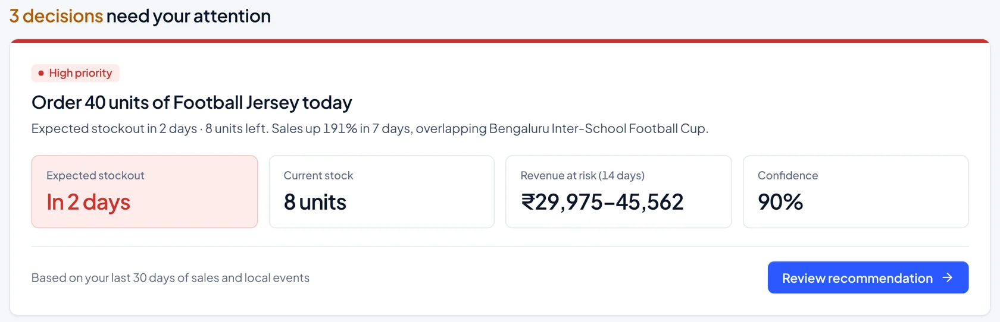
How might we stop a one-week spike from being ordered as a new normal?
Say out loud why it’s being careful
Football jersey sales were up 191% in seven days, overlapping the Bengaluru Inter-School Football Cup. After 3 of 3 similar past events, demand went back to normal within 10 days. The screen says that in plain words, shows the past events in a table, and sizes the order for the event window only.
Trade-off: A range like ₹29,975–45,562 is harder to quote to an owner than one figure. I kept the range and put a single recommended quantity next to it.
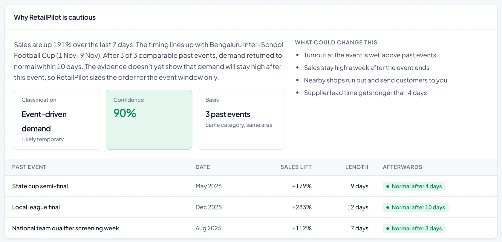
How might we make doing nothing show up as a choice with a cost?
Put a price on waiting
Three options sit side by side: wait 7 days, order 40, or order the bulk 200 the supplier would love. Each shows the money needed, stockout risk and overstock risk. The quantity can be changed, and every number updates as it moves, down to the supplier minimum of 20.
Trade-off: I kept the bulk option on screen even though it’s rarely right. Supplier deals push managers toward it, and seeing ₹1,21,500–1,31,250 that could sit unsold is what talks them out of it.
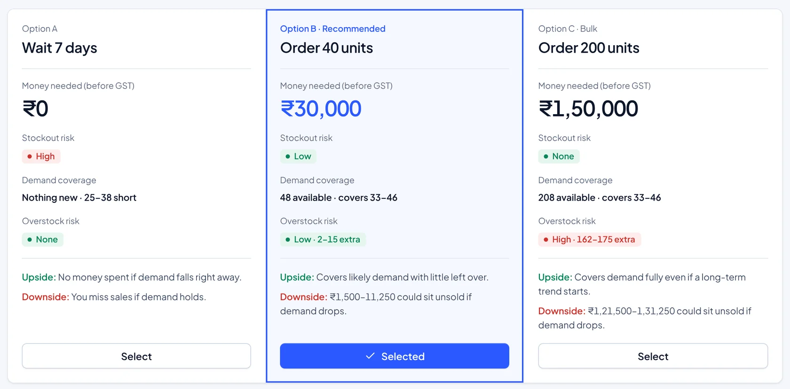
How might the product find out whether it was right?
Grade every order against what sold
When a PO is approved, RetailPilot saves the forecast it was based on. Fourteen days later the order page shows predicted against actual. The Batting Gloves order forecast 9–14 units and sold 11, so it reads “Within forecast”.
Trade-off: In v1 this grades the decision and shows the result. It doesn’t retrain anything yet. I wanted the record to exist before anything learns from it.
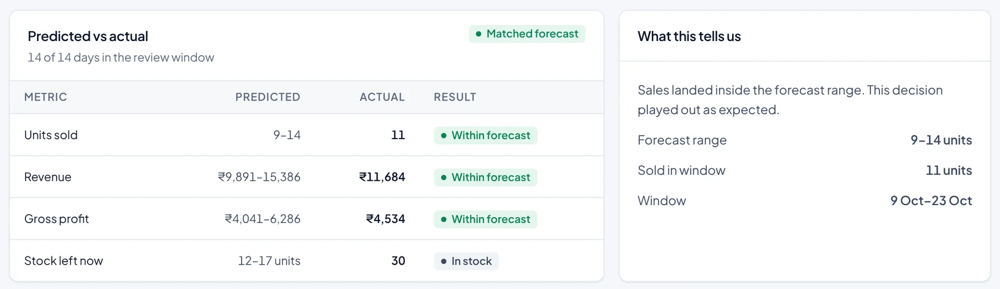
05 · User flow
Six steps, and a record at the end.
The main path goes from a ranked decision to an approved purchase order, and ends with the order being graded.
Every outcome is stored next to its forecast, so each order leaves a record of how good the call was.
Ask a question by voice or text, in English, Hindi or Hinglish. Or import a Tally or Excel export, and the inbox recomputes.
06 · Iterations
The first two directions looked finished. Both failed.
I designed two complete home screens before the inbox. Both tested badly with managers. The third one changed again once it had to run on real data.

An alert feed, sorted by colour
“Good morning, Arjun” opened on three severity cards, then recommendations, then alerts, then a priority table.
- 1Three cards, equal weightCritical, warning and opportunity sat side by side at the same size, so nothing came first.
- 2The same SKUs, three timesEach product showed up in recommendations, alerts and the priority table.
- 3“Review” was only navigationEvery row ended in a link to another page. No quantity, no cost of waiting.
What it taught me: one list, ranked once, with the action on the card itself.

A dashboard that shows everything
The second home screen led with charts and summary numbers, with the decisions further down.
- 1It answered the wrong questionThe charts said how the business was doing. What to do today sat below the fold.
- 2₹82,000 at risk, and no actionThe biggest number on the screen had nothing next to it to act on.
- 3“75% of monthly revenue saved”Saved from what? The number never said what it was measured against.
What it taught me: charts moved to the bottom. The first screen is decisions.
Direction 3, in Figma and then in code
The capstone ended with the inbox in Figma. Building it changed more than any critique did. Drag across to compare the Figma file with the live product.
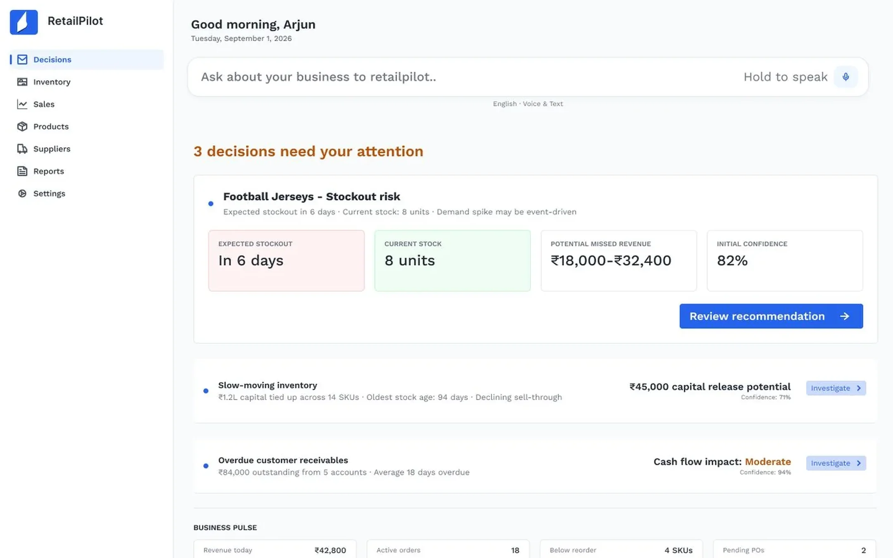
Capstone · FigmaShipped · liveIn the build the number had to come from somewhere. Forecast demand 33–46, minus the 8 in stock, rounded up to the nearest 5 and never below the supplier minimum: 40 units.
The secondary cards ended in empty buttons. They’re now a “Review →” link, and the card title says the action.
Figma skipped the first run. Real stores keep their numbers in Tally and Excel, so the product needed an import flow before it needed anything else.
07 · Final design
One decision, from the inbox to the outcome.
These are screens from the live product, on the demo store: SportZone Sports in Indiranagar, Bengaluru. Step through them in order.
Step 1
The day starts with decisions
The manager opens to a short list of decisions, each with money at stake and how sure the product is.
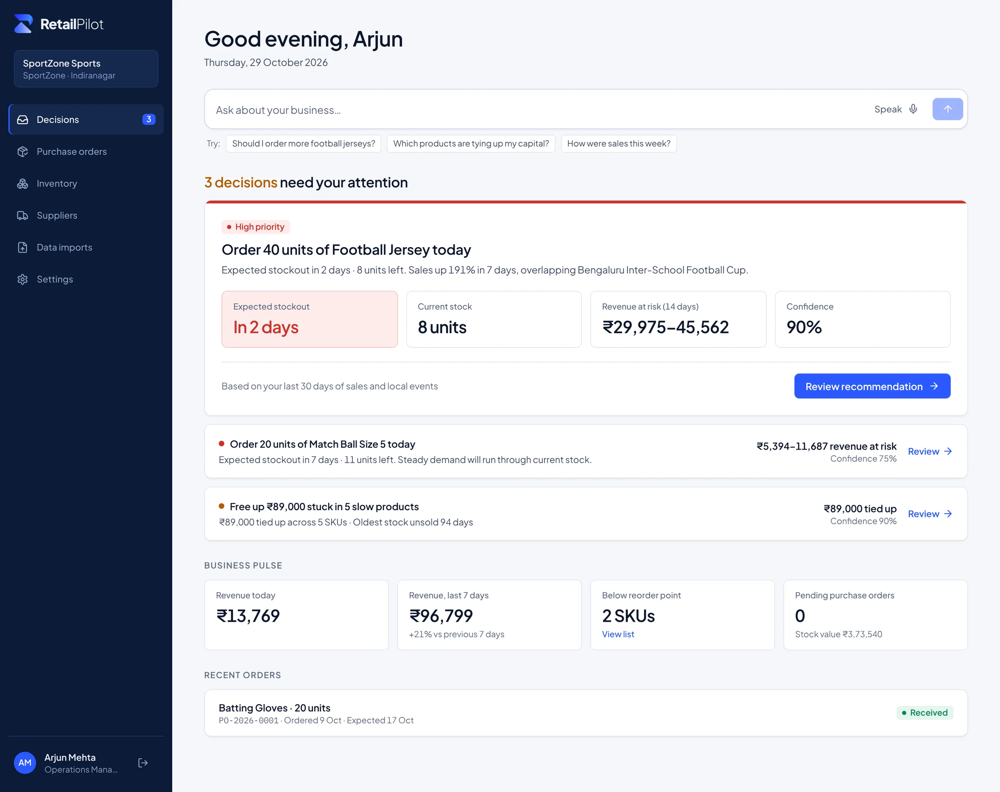
Step 2
What we know, and how sure
Before any recommendation, the evidence: what it’s based on and how each input was found.
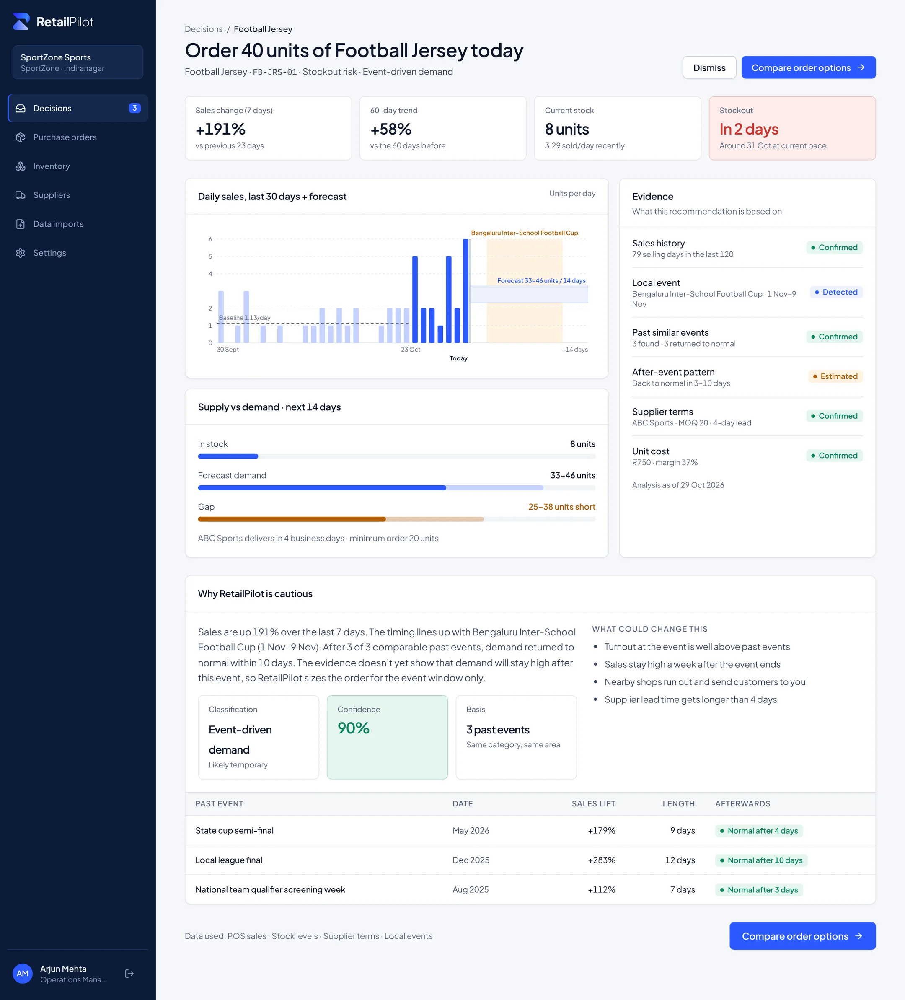
Step 3
Wait, 40 or 200
Three priced options side by side, doing nothing included.
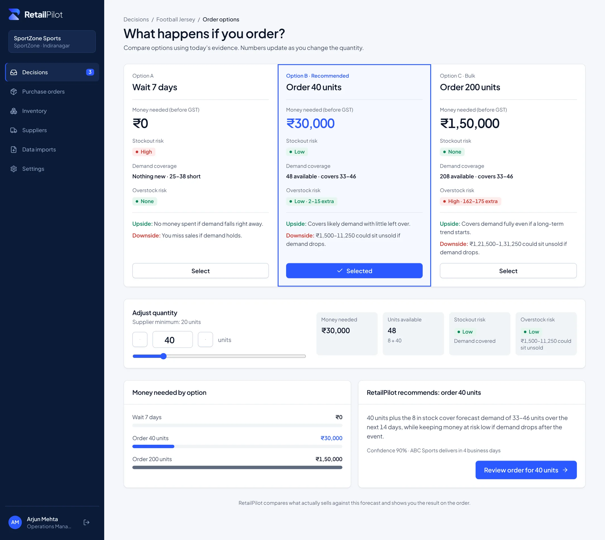
Step 4
Check before approving
The order with GST, delivery date, expected revenue and gross profit. Nothing is created until the manager approves.
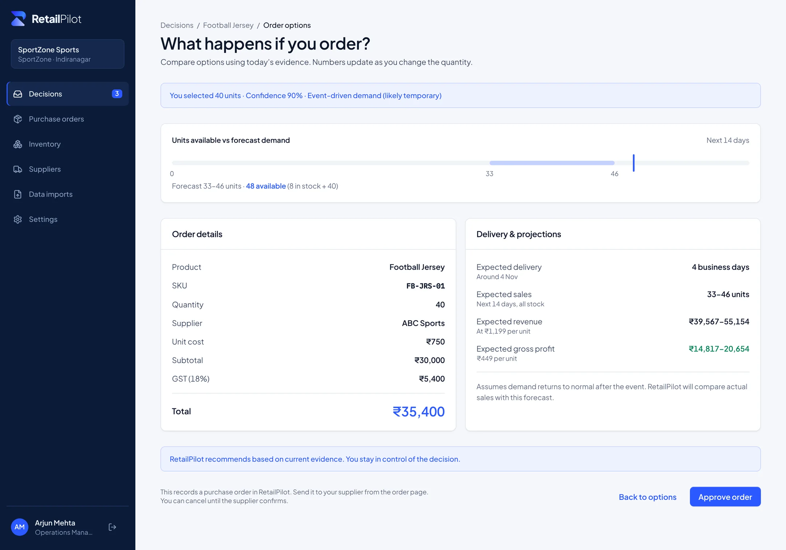
Step 5
Predicted vs actual
Two weeks after approval, the order grades itself.
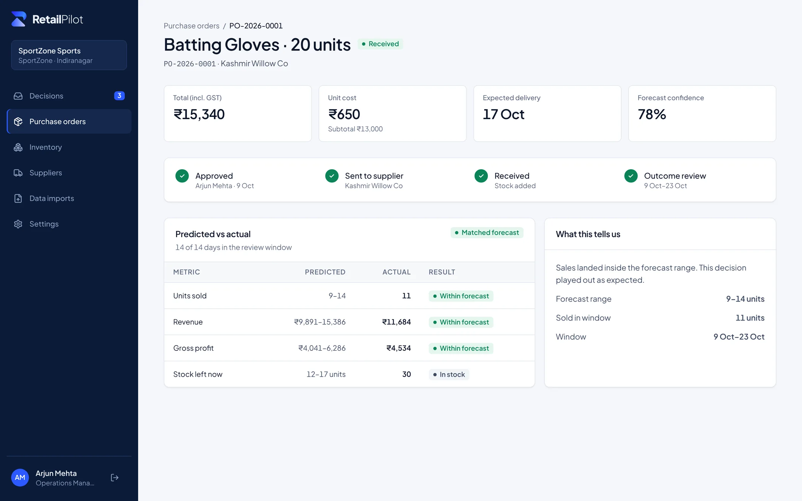
Step 6
The other kind of decision
Slow stock is a decision too. This one asks what to do with ₹89,000 sitting on the shelf.
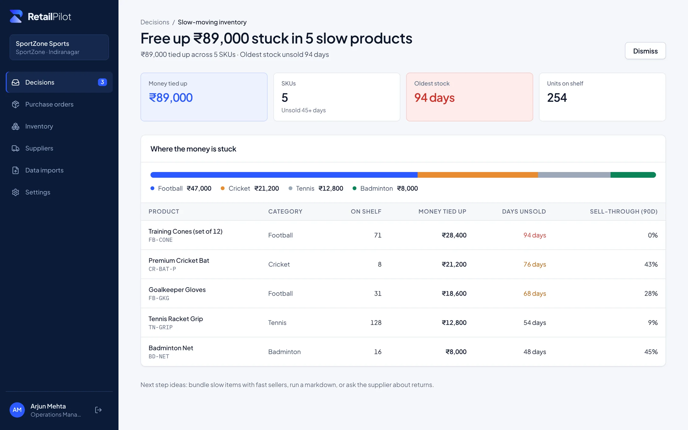
08 · Ask RetailPilot
Ask it the way you’d ask a colleague.
Managers are on their feet, between the stockroom and the counter. They can hold the mic and ask in whatever mix of languages they use.
“Mera kitna paisa stock mein phansa hai?”
How much of my money is stuck in stock? Asked by voice, answered in rupees, with the table to back it up.
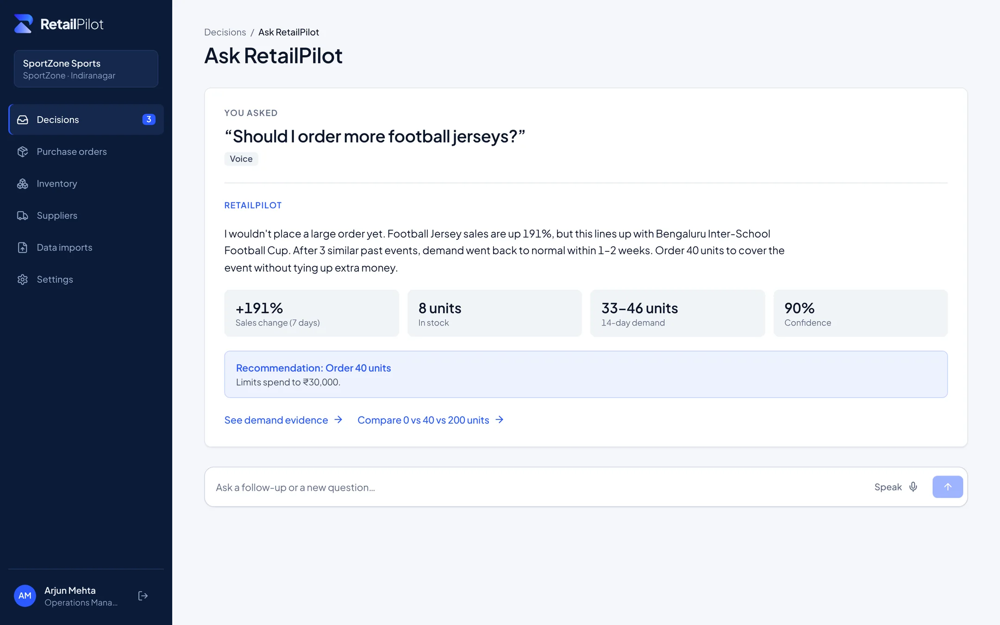
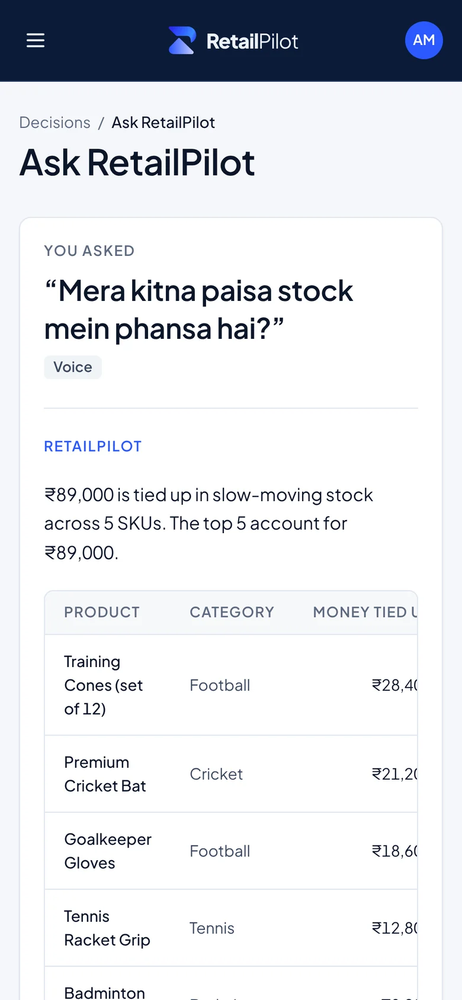
The first line is the answer. The numbers that support it come after, and then a link into the same evidence and options screens.
English, Hindi and Hinglish, typed or spoken. “Paisa”, “phansa” and “bik nahi raha” all count as asking about stuck capital.
v1 matches questions with rules, so every answer comes from the store’s own numbers. The answer format is ready for a language model to take over later.
09 · Shipping it
From a Figma file to a live pilot.
A capstone can stop at the prototype — I wanted to know whether the design held up on real data, so I built it.
TypeScript and Tailwind, on Vercel. Works on a phone.
SQLAlchemy and Alembic migrations, on Render.
One business per sign-up, with owner, manager and staff roles.
Lint, type check, build and API tests before anything ships.
I built it with Claude Code, working from my own Figma screens. Being both designer and builder meant every “we’ll figure it out later” in the file came back as a question I had to answer.
Getting a store’s data in
The first real screen a store sees is an import. It reads CSV and Excel exports, matches columns like “Bill Date” and “Net Amount” on its own, and lists every problem before changing anything. Negative quantities can be set to zero or skipped. Unknown SKUs are held back until stock is imported.
Rule I held to: nothing in the store’s data changes until the manager clicks Import.
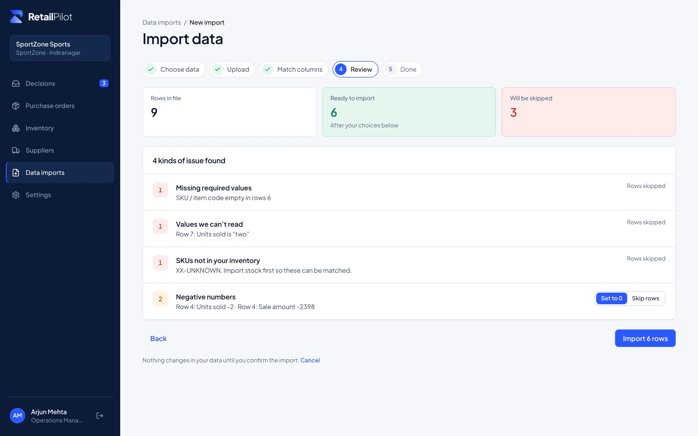
No black box in v1
Every number on a decision traces back to sales rows, stock levels, supplier terms and local events. These are the rules underneath.
+50% vs baselineA 7-day rise this big counts as a spike.spike + eventIf an event in the same category falls in the next 14 days, the spike is read as event-driven and the forecast drops back to baseline after the event.±15% bandThe forecast is a range, wider (±25%) when a spike has no explanation.confidence ≤ 92%It goes up with past events that behaved the same way and with more sales history. It never shows 100%.Not in v1 yet
The API runs on Render’s free plan and sleeps after 15 idle minutes, so the first request of the morning is slow.
Brand and design system
A mark that still works at 16 pixels.
I made the logo for the shipped product and kept the system small: a few colours, two typefaces and four evidence labels.
The R is two shapes: a bar that curls down into the bowl, and a sail under it. The gradient is for 32px and up. At 24px and below, for favicons and print, it goes flat.
Ledger, the design system
Navy around the edges and one confident blue for actions. Status colours always mean the same thing.
Navy#0A1B38 · sidebar, chrome
Blue#2B59FF · one action per card
Good#0A8457 · confirmed, on track
Warning#B25C06 · time running out
Risk#CD322C · money at risk
Every colour comes with a word, so the meaning survives a black-and-white printout and colour blindness.
₹29,975–45,562
Plus Jakarta Sans, with tabular figures so rupee amounts line up in tables.
FB-JRS-01
PO-2026-0001
IBM Plex Mono, so codes read character by character.
10 · Impact
Faster, harder to get wrong, and live.
From walkthroughs with managers, on decisions they had already made by hand. The live pilot runs on a demo store.
11 · Reflections
What I’d tell myself on day one.
Building is a design review
Typing “25 units” in Figma cost nothing. Making the product calculate it forced me to decide what the forecast was, how wide the range should be and where the supplier minimum fits.
Cautious is a design decision
How careful the model is wasn’t only a data question. How the screen explained that care decided whether a manager trusted it.
Nobody sees the hero screen first
I spent weeks on the inbox and almost none on how data gets in. In the build, the import flow was the first thing a store would see.
Get two real stores using the pilot on their own Tally exports, test the evidence labels with owners as well as managers, and let a manager send the approved PO to the supplier on WhatsApp.